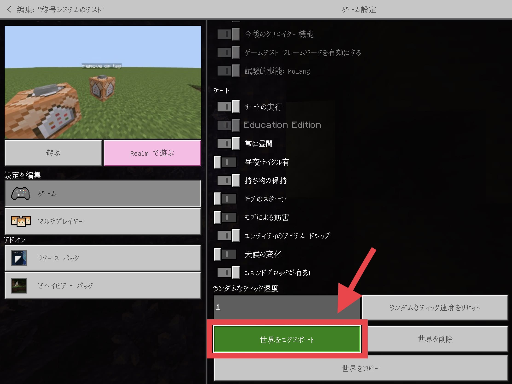
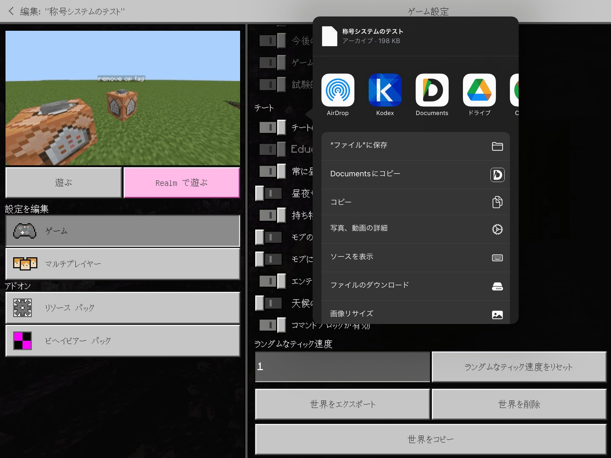

World Export

iPhone,iPadなどで簡単にワールド配布を出来るようにするアドオンです。 ボタン１つでワールドを共有できます！
・手順
1.パックをMinecraftにインポートします。
2.Minecraftが起動したら設定を開き、グローバルリソースからパックを適用します。
3.ワールド選択画面から、取り出したいワールドデータの右側にあるボタンを押して編集画面を開きます。
4.下にスクロールすると「世界をエクスポート」というボタンがあるのでそれを押してください。

5.mcworldファイルが共有されるので任意のアプリで開いてください。(Dropbox,GoogleDriveなど)

無断転載、二次配布や自作発言はやめてください。
作者Twitter : RetoRuto9900K @tutinoko_kusaa
===== ↓ ダウンロード ↓ =====
WorldExport v7.0 [Mediafire] – 11KB
WorldExport v7.0 [Dropbox] – 11KB
==========================